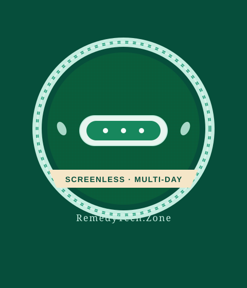

Fitbit Air: Screenless Tracking That Stays Out of the Way
No apps on your wrist. No glowing rectangle at dinner. Just sleep, steps, and heart rate that quietly log while you live.

Most “budget” wearables still try to be mini phones. Notifications, always-on screens, short batteries. The Fitbit Air takes the other path: strip the display, keep the sensors that matter, and let the band disappear on your wrist.
That design choice is the point. Without a screen, there is less urge to check, less light at night, and far less daily charge anxiety. Sleep stages, resting heart rate, and step totals still sync to the phone when you are near it. For people who want data without a second screen culture, the Fitbit Air is one of the cleaner options still under the usual $150 ceiling we cover.
Battery life is the quiet win. Screenless trackers routinely stretch into multi-day territory because the display was always the power hog. Charge less often and the habit sticks. That is the same reason we keep writing about long-battery bands and watches — adherence beats features you abandon after two weeks.
What you give up is obvious: no glanceable time, no on-wrist workouts UI, no quick replies. If you already wear a regular watch or simply do not want another glowing rectangle, that trade is fine. Pair the Fitbit Air with a phone you already open and you still get the recovery and movement picture most people actually use.
In a desk full of med-tech and wearables, this sits next to the pocket ECG and the upper-arm cuff — not as a clinical device, but as the low-friction layer that keeps daily trends honest. Buy it for sleep and consistency, not for status or apps.
Key Takeaways
- Screenless design = longer battery and less wrist distraction
- Strong fit for sleep, steps, and heart-rate trends without smartwatch noise
- Best if you already check a phone and do not need on-wrist apps
- Typical street price stays in the budget tier we cover (under ~$150)
- Product link: Fitbit Air